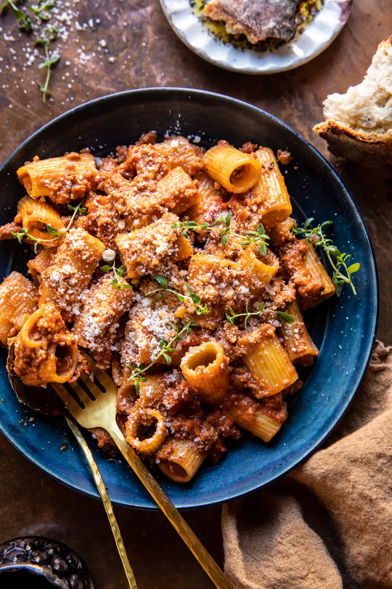

Pasta Bolognese

Description
Pasta Bolognese is a classic Italian dish made with ground beef,
tomatoes and onions. This is a staple delicious dinner recipe that
is such a crowd pleaser
Once you try it, I think it’ll be your go-to easy bolognese sauce!
Ingredients
- 1 Tablespoon olive oil
- 1 Pound lean ground beef
- 1/2 Teaspoon salt
- 1/2 Teaspoon black pepper
- 1 Onion
- 2 Garlic cloves minced
- 1 Teaspoon oregano
- 1 Teaspoon basil
- 1/2 Teaspoon crushed red pepper
- 1 15-ounce cans crushed tomatoes
- 2 Tablespoons tomato paste
- 16 ounces spaghetti or penne pasta
- Fresh basil